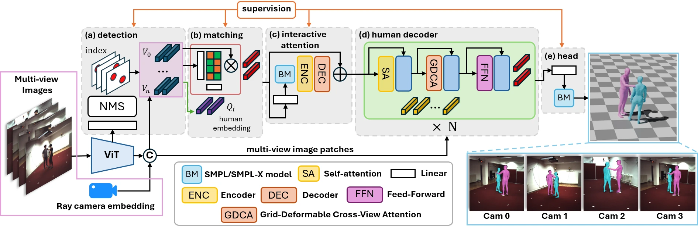
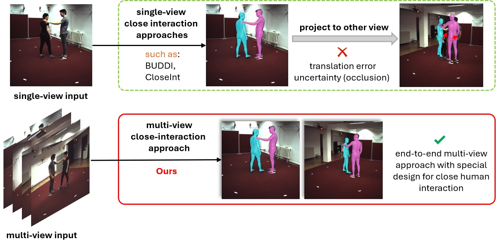
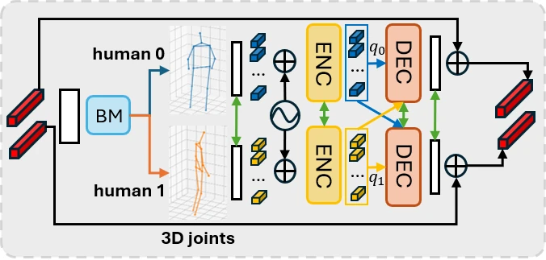
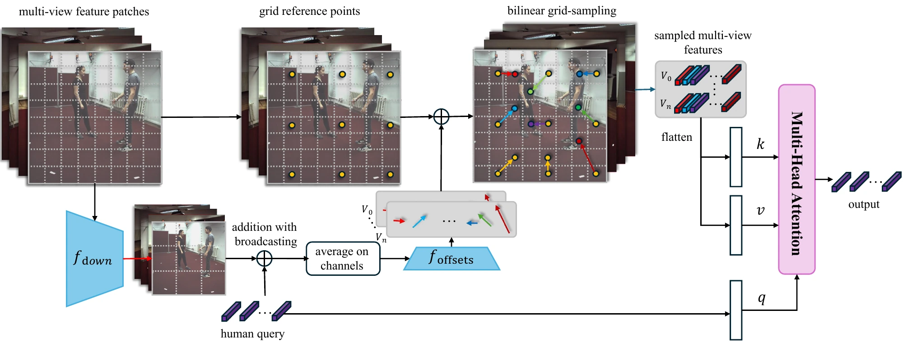
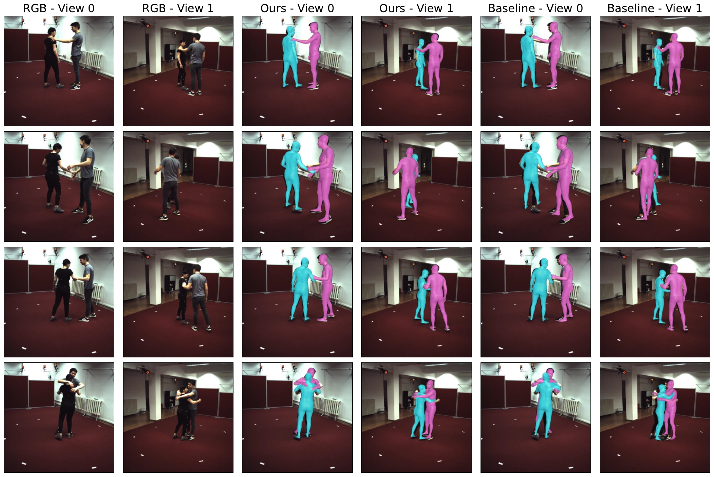
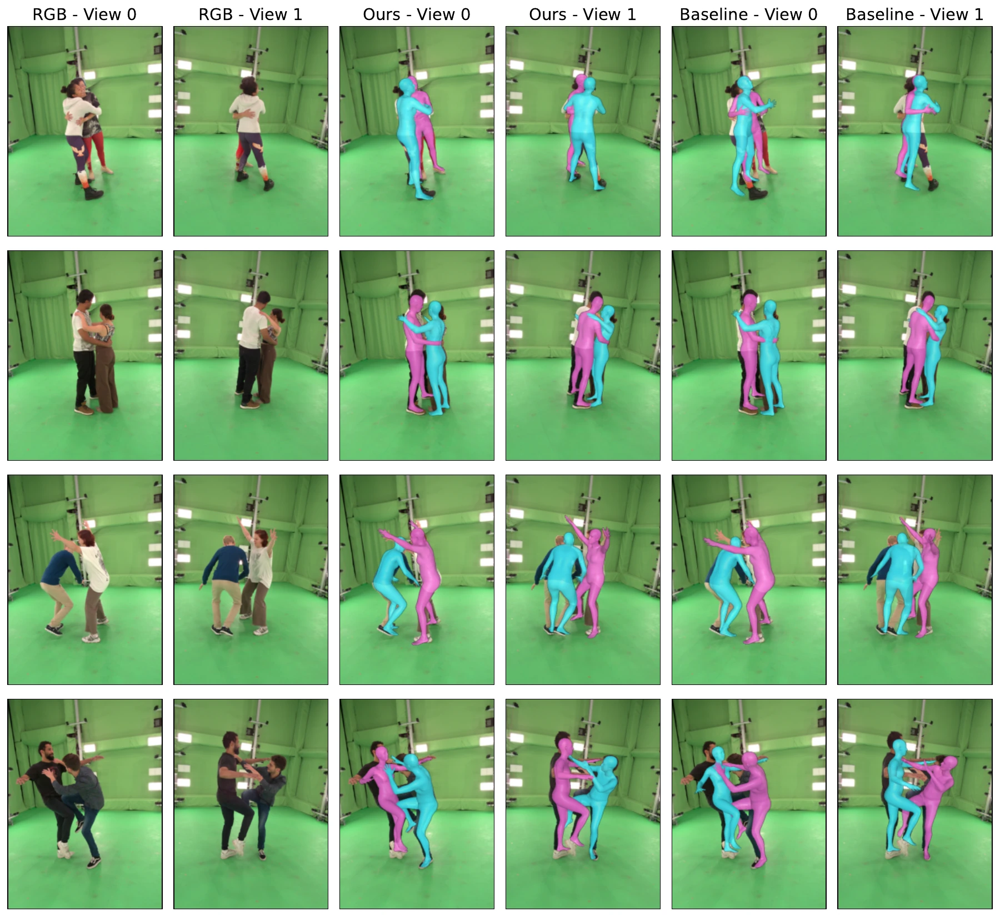
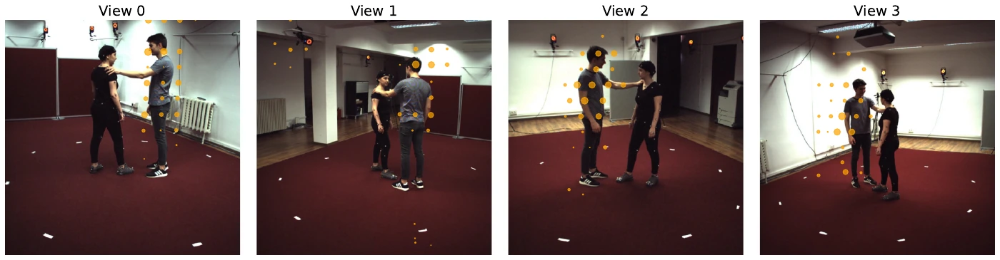
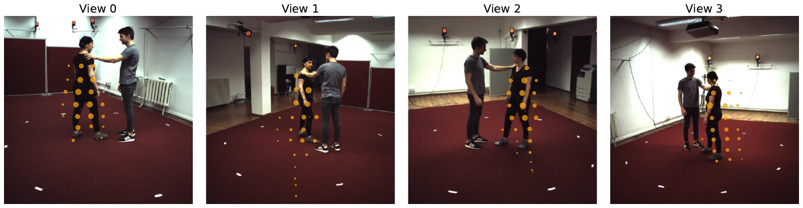
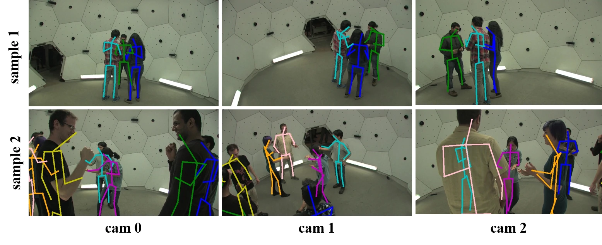

Match across views
WCFM learns soft correspondences between person detections in different views and fuses them into a unified representation for each human.
1 Texas A&M University2 Carnegie Mellon University
WACV 2027

Human mesh recovery (HMR) is crucial for applications such as AR and motion analysis, yet existing methods mainly focus on single-view settings and struggle in close two-person interactions due to severe occlusion, depth ambiguity, and weak inter-body modeling. We propose MVInter, an end-to-end multi-view framework for reconstructing physically consistent human meshes without post-optimization. MVInter introduces Weighted Cross-View Fusion with Matching (WCFM) for correspondence-aware feature aggregation, Grid-Deformable Cross-View Attention (GDCA) for robust spatial fusion, and an Interactive Attention (IA) module to explicitly model human interactions. Experiments on two-person interaction benchmarks show that MVInter achieves state-of-the-art performance and produces accurate, globally consistent 3D meshes in challenging close-interaction scenarios.
From synchronized RGB images to interaction-aware SMPL-X meshes.

WCFM learns soft correspondences between person detections in different views and fuses them into a unified representation for each human.
Interactive Attention lets each human query attend to the other person’s 3D joint features, capturing inter-body relationships during close contact.
GDCA learns separate sampling offsets for each view, gathering informative spatial cues before predicting SMPL-X parameters and global translations.


Reconstructing close interactions under severe occlusion.


Click any figure to view it at full resolution.
Evaluation on CHI3D and Hi4D. All errors are in millimeters; lower is better.
| Method | Multi-view | MPJPE ↓ | PA-MPJPE ↓ | PVE ↓ | PA-PVE ↓ | Transl. ↓ | Interaction ↓ |
|---|---|---|---|---|---|---|---|
| DualHuman | No | 71.9 | 47.8 | – | – | 228.5 | – |
| Multi-HMR | No | 57.3 | 34.2 | 62.1 | 37.5 | 224.8 | 40.2 |
| Multi-HMR‡ | Yes | 38.0 | 27.3 | 45.4 | 32.1 | 58.3 | 22.5 |
| Faster VoxelPose | Yes | 38.9 | 31.9 | – | – | – | – |
| AvatarPose | Yes | 32.8 | – | – | – | – | – |
| MVInter (Ours) | Yes | 32.2 | 23.4 | 35.2 | 25.2 | 37.4 | 20.4 |
| Method | Multi-view | Backbone | MPJPE ↓ | PA-MPJPE ↓ | PVE ↓ | PA-PVE ↓ | Transl. ↓ | Interaction ↓ |
|---|---|---|---|---|---|---|---|---|
| BUDDI | No | HRNet-32 | 96.8 | 70.6 | 116.0 | – | – | – |
| CloseInt | No | ViT-H/16 | 63.1 | 47.5 | 76.4 | – | – | 81.4 |
| DualHuman | No | – | 75.0 | 59.7 | – | – | 106.7 | – |
| Human4D | No | ViT-H/16 | 72.1 | 52.4 | 88.6 | – | – | – |
| BEV | No | HRNet-32 | 91.8 | 52.2 | 101.2 | – | – | 131.0 |
| Multi-HMR | No | ViT-L/14 | 67.0 | 43.4 | 80.6 | 60.4 | 100.2 | 69.0 |
| Faster VoxelPose | Yes | ResNet-50 | 69.4 | 54.7 | – | – | – | – |
| Multi-HMR‡ | Yes | ViT-L/14 | 52.6 | 30.6 | 61.4 | 39.1 | 84.3 | 75.0 |
| MVInter (Ours) | Yes | ViT-L/14 | 47.5 | 29.0 | 55.7 | 36.8 | 59.2 | 49.2 |
‡ Multi-HMR re-implemented for multi-view human mesh recovery. “–” indicates an unavailable result. PA denotes Procrustes alignment; Transl. denotes global translation error.
Starting with the regression baseline, we progressively add GDCA, WCFM, and Interactive Attention. The complete model achieves the lowest error across all five metrics on CHI3D.
| Configuration | MPJPE ↓ | PA-MPJPE ↓ | PVE ↓ | Transl. ↓ | Interaction ↓ |
|---|---|---|---|---|---|
| Regression baseline | 37.95 | 27.27 | 45.37 | 58.34 | 22.53 |
| + GDCA | 36.14 | 27.36 | 41.85 | 39.00 | 22.69 |
| + GDCA + WCFM | 37.48 | 24.07 | 39.18 | 41.86 | 28.00 |
| + GDCA + WCFM + IA | 32.24 | 23.44 | 35.20 | 37.41 | 20.39 |
GDCA selects complementary evidence across views.


The learned attention focuses on the target person, gathering complementary cues about limb positions and body shape from different viewpoints.
A qualitative extension to multiple humans on CMU Panoptic.

@inproceedings{li2027mvinter,
title = {MVInter: Multi-View Human Mesh Recovery for Close Interactions},
author = {Li, Yijie and Zheng, Ce and He, Yijie and Wang, Hewei and Jeni, L{\'a}szl{\'o} A.},
booktitle = {Proceedings of the IEEE/CVF Winter Conference on Applications of Computer Vision (WACV)},
year = {2027}
}